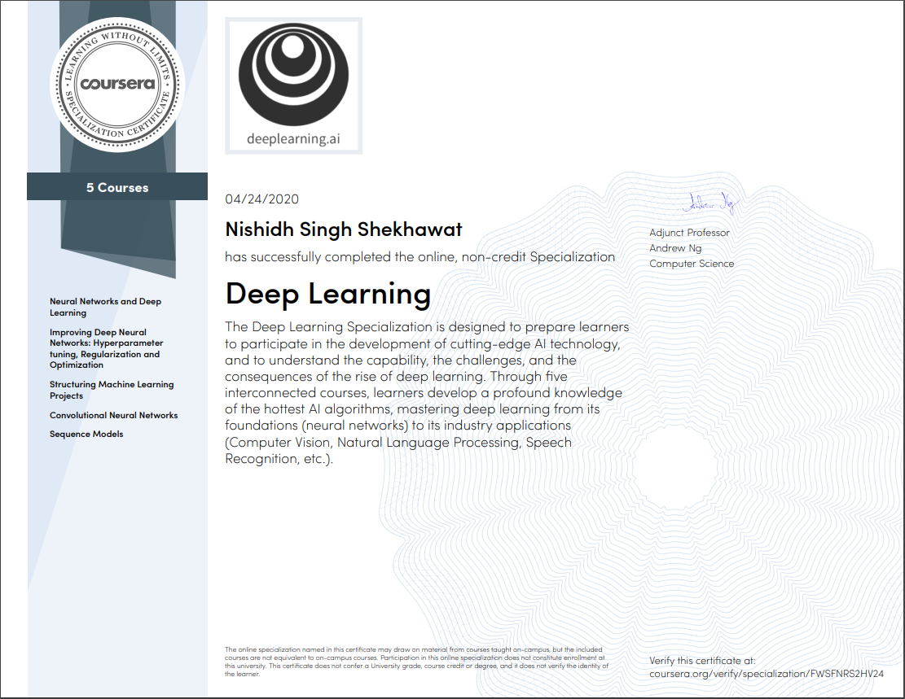

<div class="col-md-4 col-sm-6 grid-item courses github"><div class="blog-item rounded bg-dark shadow-light wow fadeIn" id = 'dl'><div class="thumb"><a href="#small-dialog" class="work-content"><div class="portfolio-item roundedtop shadow-dark"><div class="details"><span class="term">Course</span><h4 class="title">Deep Learning Specialization</h4></div><div class="thumb"><div class="mask"></div></div></div></a><div id="small-dialog" class="white-popup zoom-anim-dialog mfp-hide"><h2></h2><p></p><p></p><a href="https://coursera.org/verify/specialization/FWSFNRS2HV24" target="_blank" class="btn btn-default">Verify</a></div></div><div class="details"><h4 class="my-0 title"><a href="#">Deep Learning Specialization</a></h4><ul class="list-inline meta mb-0 mt-2"><li class="list-inline-item">28 April, 2020</li><li class="list-inline-item">deeplearning.ai</li></ul></div></div></div>